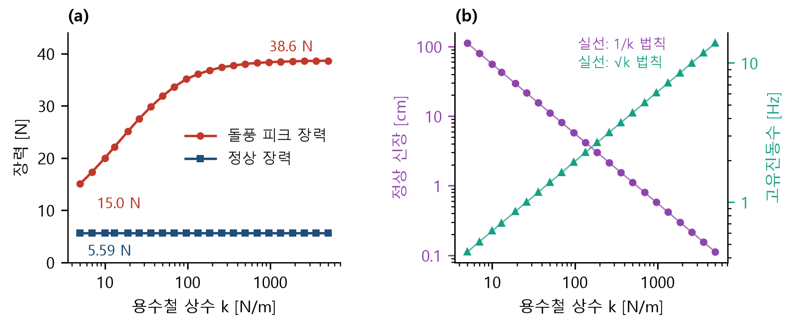
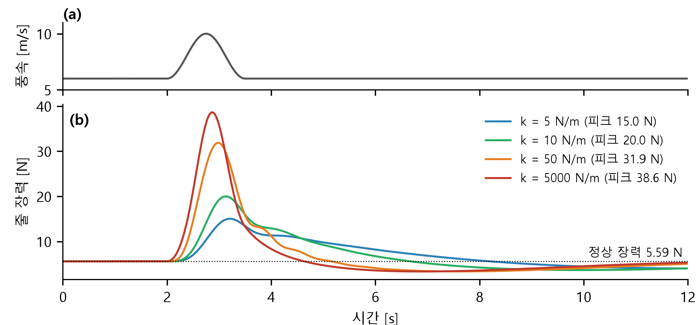

—
방패연을 지상 윈치와 계류줄로 운용하는 공중 태양광 방식을 대상으로, 연–줄–탑재물 계를 시뮬레이션하여 계류줄 탄성의 효과를 검증하였다. 이 사이트는 그 연구의 코드와 시스템 구조를 정리한 것이다.
계류 방식에서 장치의 안전은 줄이 받는 하중에 좌우된다. 돌풍이 불면 줄의 장력이 짧은 시간에 상승하며, 지상국의 윈치가 줄을 풀어 이를 완화해야 한다. 그러나 본 연구의 윈치는 줄을 4.7 cm/s로 감으므로, 돌풍이 지나가는 1.5초 동안 줄 길이를 약 7 cm만 조절할 수 있다.
연의 형상은 방패연으로, 윈치 속도는 모터로 정해져 있으므로 설계에서 조절할 수 있는 변수는 줄의 강성이다.
연을 2차원 질점으로, 줄을 인장력만 전달하는 스프링·감쇠기로 모형화하였다. 바람은 평균풍(멱법칙), 난류, 돌풍의 합으로 구성하고, 줄의 강성을 5~5000 N/m에서 변화시키며 정상 장력과 돌풍의 피크 장력을 비교하였다.
모형의 타당성은 적분 수렴성, 에너지 보존, 상사 시험, 변이 시험, 단위시험 152건으로 점검하였다.
| 항목 | 결과 |
|---|---|
| 정상 장력 (줄 강성 5~5000 N/m) | 5.59 N, 모든 조건에서 일정 |
| 1.5초 돌풍(6→10 m/s)의 피크 장력 | 38.6 N → 15.0 N (61 % 감소) |
| 돌풍 지속시간 10초에서의 감소 효과 | 약 12 % |
| 난류 비행 150회 최대 장력의 감소 효과 | 5 % |
| 100회 비행에 한 번 초과하는 하중 | 54.8 N (95 % 구간 51.3~58.2 N) |
| 단위시험 | 152건 통과 (sim 94, station 58) |
정상 장력은 공기력과 중력의 평형으로 정해지므로 줄의 강성에 의존하지 않는다. 반면 돌풍의 피크 장력은 줄이 늘어나며 충격이 작용하는 시간을 연장하는 만큼 감소한다. 따라서 탄성 계류줄은 연을 띄워 두는 데 필요한 힘은 그대로 두고, 줄과 연결부가 견뎌야 하는 피크 하중을 줄이는 수단이다. 이 효과는 돌풍이 길어질수록 작아지며, 난류 비행 전체의 최대 장력에서는 5 % 수준이다.


모든 수치는 시뮬레이션 결과이다.
저장소는 크게 세 부분으로 구성된다. 계류 시스템을 계산하는 시뮬레이션(sim/), 실제 비행을 보면서 모형과 비교하는 지상국 모니터(station/), 두 개의 ESP32 노드를 구동하는 펌웨어(firmware/)이다. 아래 그림의 상자를 누르면 해당 파일의 코드가 열린다.
공중 노드가 측정한 자세·위치·발전 값은 ESP-NOW 무선으로 지상 노드에 전달되고, 지상 노드는 자신이 측정한 장력·각도·풍속과 함께 CSV 한 줄로 USB 시리얼에 출력한다. 중계기(bridge.py)는 이 줄을 읽어 파생값을 계산하고, 시뮬레이션 모형의 예측과 함께 SSE로 브라우저에 송출한다.
펌웨어와 중계기 사이에는 스키마나 핸드셰이크가 없으므로, 열 수와 형식 지정자의 일치를 test_bridge.py가 펌웨어 소스를 직접 파싱하여 검사한다.
모든 분석 스크립트는 같은 모형을 공유한다. params.py의 상수와 wind.py의 바람장을 model.py의 운동방정식에 넣어 적분하고, 각 연구 스크립트가 그 위에서 서로 다른 질문에 답한다. run_all.py는 스크립트를 하위 프로세스로 하나씩 실행하여 결과를 sim/out/에 저장한다.
Python 3.11 이상이 필요하며, 의존 패키지는 requirements.txt에 있다.
저장소를 내려받고 패키지를 설치한다.
git clone https://github.com/hydrangea111/kite-twin cd kite-twin pip install -r requirements.txt
전체 연구 스크립트를 순서대로 실행한다. --quick은 느린 변화 시험을 제외한다(약 2분).
python sim/run_all.py --quick
python sim/run_all.py elasticity # 지정한 것만모형과 지상국의 단위시험을 각각 실행한다.
cd sim && python -m pytest -q # 94건 cd ../station && python -m pytest -q # 58건
장비 없이 화면을 확인한다. 브라우저에서 127.0.0.1:8787 에 접속한다.
python station/bridge.py --sim --area 0.67
펌웨어와 같은 바이트를 TCP로 내보내는 장치를 두고 시리얼 경로를 그대로 통과시킨다.
# 터미널 1 python station/fake_rig.py # 터미널 2 python station/bridge.py --serial socket://127.0.0.1:5577 --sim --area 0.67
실제 비행에서는 시리얼 포트를 지정한다. 기록한 CSV는 그대로 재생할 수 있다.
python station/bridge.py --serial COM5 --area 0.67
python station/bridge.py --replay station/logs/기록.csv --speed 2
python station/export.py --open # 오프라인 단일 HTMLfirmware/payload를, 지상 노드에 firmware/ground를 PlatformIO로 올린다. 두 노드는 telemetry.h의 같은 패킷 정의를 사용한다.bridge.py --serial COM5를 실행한다. 연 면적은 계수의 배율이 되므로 반드시 입력한다.station/logs/에 원시 행으로 쌓인다.sim/twin.py가 준정적 구간의 기록에서 양력·항력계수를 역산하여 모형을 교정한다.저장소의 소스 파일 74개(약 1.5만 줄)를 이 페이지에서 바로 읽을 수 있다. 왼쪽의 순서도에서 단계를 누르면 해당 코드의 줄로 이동하고, 「파일」 탭에서는 파일을 직접 고르거나 이름으로 검색한다. 주소의 #code/경로:줄 부분을 공유하면 같은 위치가 열린다.